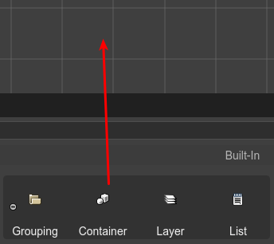

Container objects
In Phaser 3, the only game object types that have children are the Container (Phaser.GameObjects.Container) and the Layer objects. But only the Container can be used to transform the children (in position, angle and scale).
Learn more about working with parent objects in the Scene Editor.
You can create a container by dropping a Container built-in block on the scene, or with the Create Container with Selection command.
The code generated by the scene compiler, to create a container, is like this:
// x=100, y=20
const container_1 = this.add.container(100, 20);
// some object is created and added to the container
const someObject = ... ;
container_1.add(someObject);
Grouping objects in a Container
There are cases where you need to create a container with a couple of objects. You can do this by selecting the objects and executing the Create Container with Selection command.
To execute the command, you can press the J key or select it the context menu.
Select the objects.
Execute the command (press
J).A new container is created.
The objects are removed from the original parent.
The objects are added to the new container.
The new container is trimmed.
Trimming a Container
The Trim Container command removes the whitespace of the container. This means, that the children are shifted to the left/top corner to the container, and the container is re-positioned to keep the children at the same global position.
To execute this command press the Shift+T key or select the Trim Container options of the context menu.
Container properties
The Container type contains some of the common object properties: